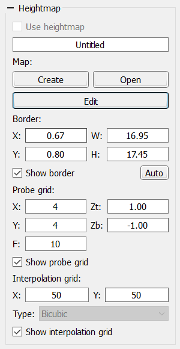

The Heightmap panel is responsible for creating, loading, scanning a surface roughness map and subsequently correcting the CP to level the part’s curvature when machining with a CNC.
This feature is useful for PCB milling and engraving.
The panel provides controls to:
CP correction based on the active height map is performed by enabling the Use heightmap checkbox.
More detailed information on using the height‑map feature can be found in Creating a heightmap of this manual.